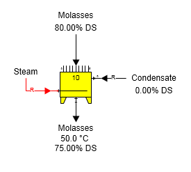
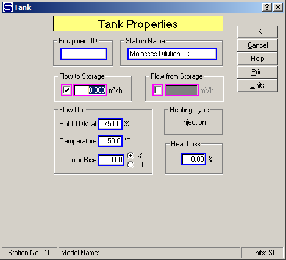

Output Flow TDM % The figure below shows a molasses dilution tank with the output flow held to a total dry matter (%). Condensate is used to dilute the molasses to 75.00% DS and injection steam heats the combined flow to 50.0°C. Condensate goes into port 9 of the tank and the condensate flow is a required flow; hence, Sugars will calculate the quantity of condensate needed to dilute the molasses to 75% DS from the 80% DS it has as it flows into the tank. Also, the steam is required because Sugars will calculate the quantity of steam necessary to heat the combines flow to 50.0°C. All of the steam condenses and dilutes the flow. Sugars considers the quantity of condensed steam when it calculates the amount of condensate into port 9 that is necessary to give a 75.00% DS output flow.

The Tank Properties window is shown in the figure below for the single station model shown in the above figure. No storage flow, color rise or heat loss is considered in the model.
